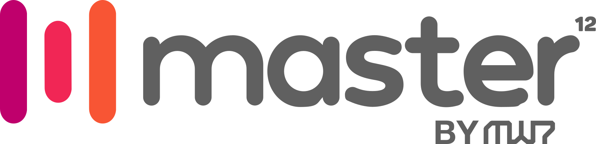

Jun 2026 — Presente
Software Engineer
Vibra Digital · Remoto
Engenharia de produtos digitais para o ecossistema da Vibra Digital, braço de tecnologia do Grupo Bandeirantes.
- PHP
- Node.js
- NestJS
Technical Account Manager · Engenharia de Software
Sou Sérgio Sposito, engenheiro de software com mais de 10 anos construindo e evoluindo plataformas digitais de grande escala e alto tráfego — VEJA, Quatro Rodas, Guia do Estudante, Superinteressante e CNN Brasil. Hoje atuo como referência técnica e ponte entre engenharia, produto e negócio.
Plataformas em que atuei

一 · Como atuo
Um bom TAM entende a arquitetura a fundo, antecipa riscos e mantém negócio e engenharia alinhados. É o que faço há anos em ambientes onde instabilidade não é opção.
Lidero a definição de arquitetura e as decisões técnicas do time, sustentando escolhas orientadas a escalabilidade, resiliência e alta disponibilidade.
Atuo na interface com produto em discovery, definição de escopo e planejamento, alinhando prioridades técnicas aos objetivos do negócio.
Referência técnica em incidentes e gargalos: identificação de causa raiz, otimização de performance e estabilidade em picos extremos de audiência.
Estabeleço padrões de desenvolvimento (SOLID, Clean Code) e asseguro a qualidade das entregas, reduzindo risco operacional ao longo do ciclo de vida.
二 · Acompanhamento de ponta a ponta
Discovery
Entender o problema real e o objetivo de negócio.
Escopo e arquitetura
Definir a solução, riscos e integrações externas.
Entrega
Coordenar o time e garantir qualidade em produção.
Sustentação
Monitorar, otimizar e evoluir com o cliente.
三 · Base técnica
四 · Formação
Uninove
Universidade Nove de Julho
五 · Trajetória
Vibra Digital · Remoto
Engenharia de produtos digitais para o ecossistema da Vibra Digital, braço de tecnologia do Grupo Bandeirantes.
Fev 2021 — Jun 2026
CNN Brasil
Sistema de Esportes
Futebol e jogos ao vivo em tempo real, com ingestão de dados esportivos.
Plataforma Eleições
Backend escalável preparado para picos extremos de audiência.
CNN Stocks
Plataforma financeira por assinatura integrada a APIs de mercado.
CNN Pay
Gateway interno de pagamentos com Stripe e gestão de assinaturas.
Grupo Abril
Início de carreira · 2016 — 2020
Vector ITC
Full-stack · 2019 — 2020
APIs, autenticação com AWS Cognito e testes automatizados com Codeception.
Havok School
Full-stack · 2018 — 2019
Layouts e sistema escolar, do frontend ao backend.
Proton
Full-stack · 2017 — 2018
Sistemas personalizados em PHP/Laravel para diferentes segmentos de negócio.

Agência Master12
Full-stack · 2016 — 2017
Temas WordPress e sistemas PHP com MVC e orientação a objetos para clientes da agência.
Planejar Brasil
Estágio · 2016
Suporte técnico, hospedagem, domínios e WordPress.
六 · Contato